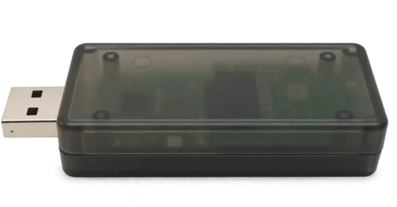
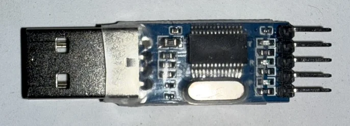

ZiGate Wi-Fi v1.3 · Zigbee2MQTT
Ta ZiGate dans
Home Assistant.
Suis les photos pour préparer ta clé et l’ajouter dans Home Assistant. Ouvre cette page dans Chrome ou Edge sur ordinateur.

Installer les deux firmwares
Flash USB
Version d’essaiBranche le module Wi-Fi seul
Wi-Fi 1.1.1
- Débranche la ZiGate, ouvre le boîtier et sépare les deux cartes.
- Appuie sur le petit bouton sous les broches.
- Branche la carte Wi-Fi en USB en gardant le bouton enfoncé.
- Relâche le bouton dès que la carte est branchée.
- Clique sur Choisir le port USB, puis sur Installer le firmware une fois le port sélectionné.
- USB débranché, emboîte la radio seule sur l’adaptateur USB‑TTL du kit.
- Appuie sur le bouton S2 de la radio.
- Branche l’adaptateur en USB en gardant S2 enfoncé.
- Relâche S2 dès que l’adaptateur est branché.
- Clique sur Choisir le port USB, puis sur Installer le firmware une fois le port sélectionné.

1b. Configure le Wi-Fi par USB
Firmware Wi-Fi 1.1.1 requis. Si l’application Zigbee2MQTT ZiGate tourne, arrête-la avant le réglage.
- Si le module Wi-Fi est déjà branché, débranche-le. Branche-le seul, sans appuyer sur le bouton.
- Saisis le Wi-Fi 2,4 GHz de ta box.
- Clique sur Enregistrer le Wi-Fi, puis choisis le port USB.
Le port COM ne s’ouvre pas
- Ferme les autres onglets de flash et les logiciels série.
- Dans le Gestionnaire de périphériques de Windows, vérifie quel port disparaît quand tu débranches l’adaptateur radio.
- Rebranche l’adaptateur. Dans les propriétés du port, relève son nom et l’éventuel code d’erreur.
Si Windows affiche PL2303HXA PHASED OUT, ouvre le guide ci-dessous pour choisir la marche à suivre selon ta version de Windows.
Facultatif · Effacer les anciens appairages
Garde la radio sur l’adaptateur USB‑TTL. Débranche l’adaptateur, puis rebranche-le sans appuyer sur S2.
La réinitialisation efface les appareils appairés et les paramètres de l’ancien réseau.
3. Remonte la ZiGate
- Débranche les deux cartes. Retire la radio de l’adaptateur USB‑TTL.
- Emboîte la radio sur le module Wi-Fi, comme sur la photo.
- Branche la ZiGate montée en USB sans appuyer sur les boutons.
- Retrouve son adresse IP dans la liste des appareils de ta box.

Configurer le Wi-Fi via le point d’accès de la ZiGate
- Branche le module Wi-Fi en USB sans appuyer sur le bouton. Si l’ancien réseau est encore accessible, coupe-le temporairement. Le point d’accès apparaît après environ 45 secondes hors connexion.
-
Lis le nom et la clé du point d’accès. Connecte ton ordinateur à ce réseau.
Choisis le port USB utilisé pour flasher le module Wi-Fi. Garde la ZiGate branchée et utilise la clé affichée pour rejoindre ZIGATE-….
- Réseau ZiGate
- Clé du réseau ZiGate
- Une fois connecté au réseau ZIGATE-…, ouvre 192.168.4.1. Saisis le nom et le mot de passe du Wi-Fi 2,4 GHz de ta box. Après le redémarrage, reconnecte ton ordinateur à ta box et retrouve l’adresse IP de la ZiGate dans ton routeur.
Si le port USB n’apparaît pas sous Windows, ouvre la page Pilotes USB pour Windows.
4. Installe l’application Zigbee2MQTT ZiGate
- Clique sur Ajouter le dépôt ZiGate, puis installe Zigbee2MQTT ZiGate dans la boutique de Home Assistant.
- Dans Configuration, saisis l’adresse IP de la ZiGate. Si tu as déjà un réseau Zigbee, choisis un autre canal. Enregistre.
- Clique sur Démarrer, puis sur Ouvrir l’interface Web. Active Afficher dans la barre latérale pour retrouver la page ZiGate.
Les deux instances peuvent utiliser le même broker MQTT. Zigbee2MQTT ZiGate utilise le préfixe zigbee2mqtt_zigate.
Utilise l’adresse affichée après la configuration USB ou celle indiquée par ta box.
Réglages du broker MQTT
Si tu utilises Mosquitto dans Home Assistant, l’application le récupère automatiquement. Si ton broker est externe, renseigne son adresse et ses identifiants dans Configuration → Broker MQTT externe.
Pour une première installation sans broker MQTT, installe et démarre Mosquitto broker.
Home Assistant Container et configuration YAML
Avec Home Assistant Container, lance une deuxième instance Zigbee2MQTT avec son propre dossier de données. Ajoute l’adresse de ton broker MQTT et choisis un canal Zigbee différent de celui de ton premier réseau.
homeassistant:
enabled: true
mqtt:
base_topic: zigbee2mqtt_zigate
serial:
adapter: zigate
port: tcp://192.168.1.50:99995. Ajoute ton premier appareil Zigbee
- Ouvre Zigbee2MQTT ZiGate et clique sur Autoriser l’appairage.
- Mets une ampoule ou un capteur en mode appairage.
- Dans Home Assistant, ouvre l’intégration MQTT dans Paramètres → Appareils et services. Ajoute-la si elle manque. Ton appareil doit y apparaître.